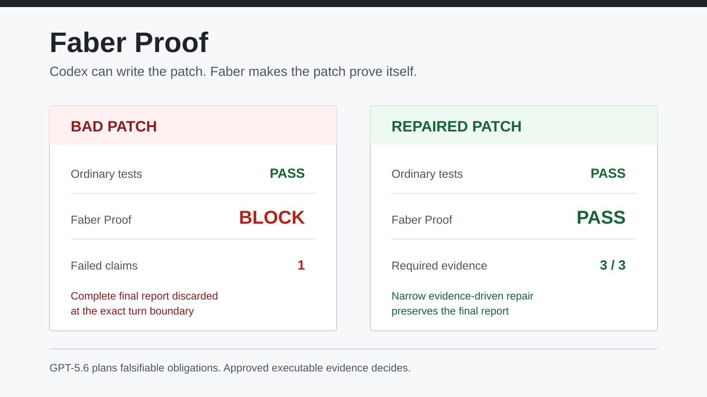

Plan
Turn task requirements and a bounded diff into claims that can be tested.
Development preview
Codex can write the patch. Faber requires evidence before acceptance.
Faber accepts proposed falsifiable obligations for a patch, runs only
repository-approved checks, and returns an evidence-bound PASS,
BLOCK, or HUMAN_REVIEW decision.

REPLAY — FAKE-DEVELOPMENT); not live-model or production evidence.
Method
Turn task requirements and a bounded diff into claims that can be tested.
Execute only evidence capabilities approved by repository policy.
Bind results to the exact patch and return an auditable decision.
Trust boundary
The planner can identify claims and select approved proof templates. It cannot provide arbitrary commands or the final verdict.
Evidence checkpoint
Passing tests, plus one guarded live-provider test skipped.
Deterministic adversarial regression campaign at the current checkpoint.
Ordinary tests pass both scheduler candidates; Faber separates them.
These are project-run development results, not independent certification. Four P0 authority findings have remediation candidates and targeted regression tests, but await fresh independent re-verification; the audit is not green.
Current scope
Faber Proof is currently a development-local tool. Its no-key replay path can reproduce evidence reports without an account or network request. The local runner is not a production sandbox, and a passing report covers declared obligations—not universal correctness. The executable capability catalog is currently authored and approved by the repository owner; automatic policy bootstrapping and lifecycle management remain research questions.